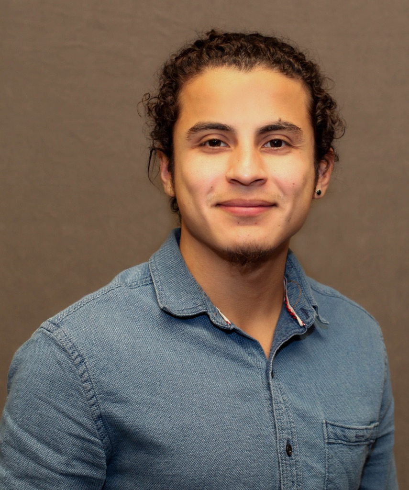

About Me
Hello! Welcome to my site. Please read my short bio below and browse through my portfolio links.
Thanks again for visiting! I'm Luis Cartagena——a Salvadoran-American——born and raised in Los Angeles, CA. I'm the first of seven (!) sibilings to attend and graduate from a four-year university. During my undergrad at Northwestern University, I studied Earth and Planetary Science and completed the ISEN certificate for Sustainability and Energy. I'm currently enjoying the challenging but rewarding position of high school science instructor. In my debut year (2018) as a teacher, I decided to enroll in Northwestern's Coding (Full Stack) Bootcamp to continue adding to my diverse set of skills. My background in environmental sustainability complements the skills in research and analytics that I’ve developed through my Earth science coursework. In addition to academics, I have been involved in the Northwestern Impossible Challenge, an annual student competition that offers a first-cut analysis of potential solutions to critical complex global problems—like climate change—by looking at economic, political, social and technological feasibility. I have also participated in Northwestern's Solar Decathlon team, helping design a fully-functional, solar-powered home. Additionally, I have completed the Semester in Environmental Science (SES) program at the Marine Biological Laboratory where I did research on climate-change and soil health. Some of my specialties include: Leadership and Environmental Sustainability, Full-Stack Coding (certificate pending—March 2019) and Data Analysis through Excel.